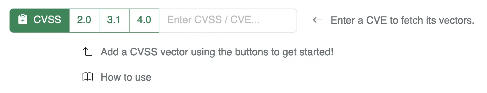
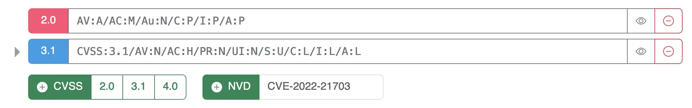
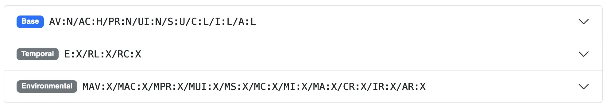
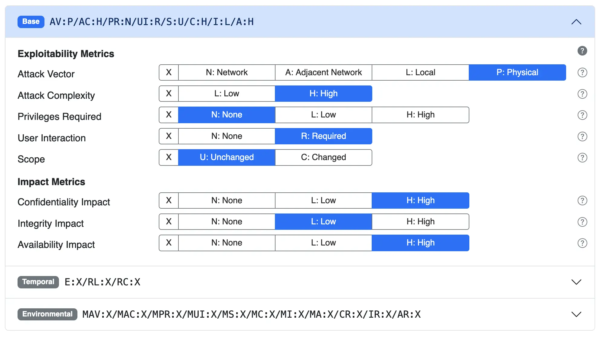
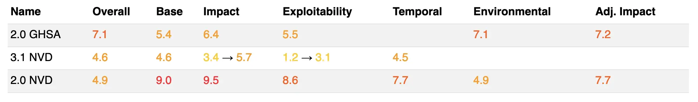
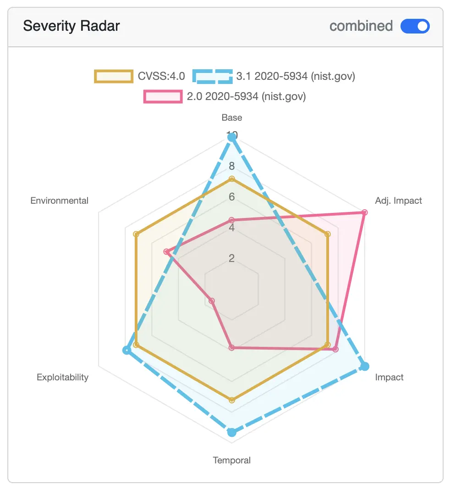
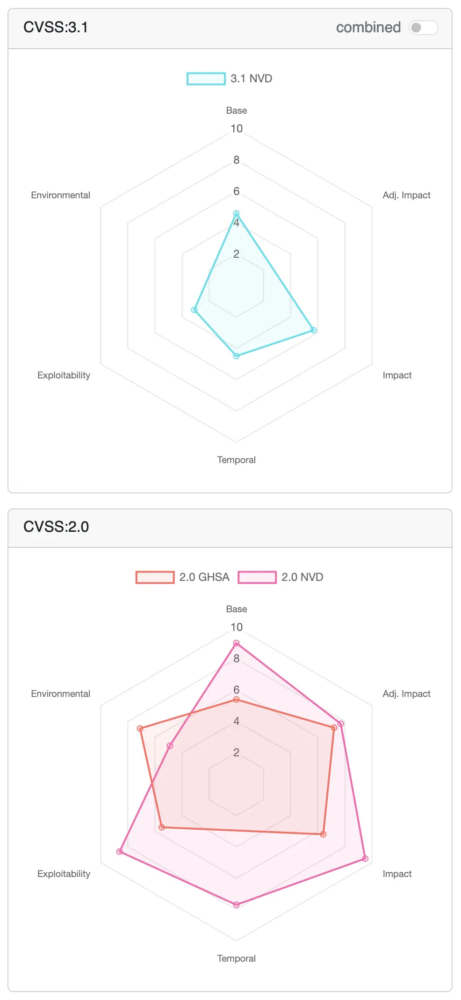
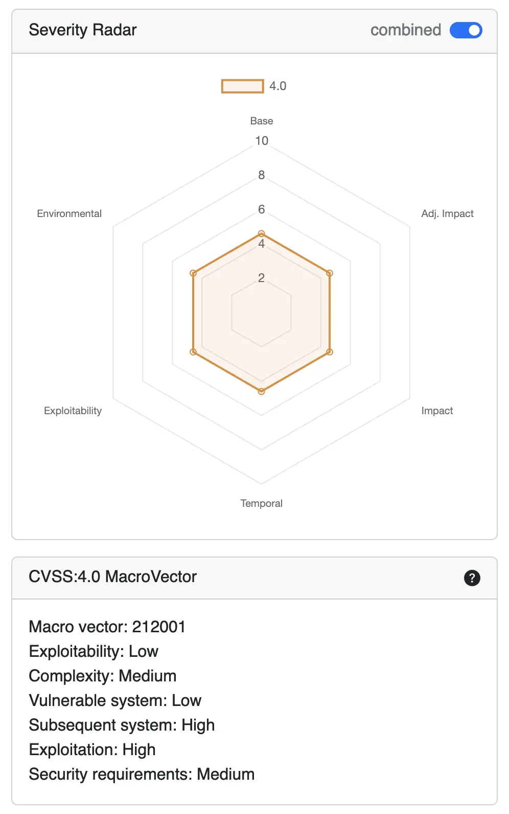

Creating new CVSS vectors
To add a new vector, select your desired CVSS version by clicking one of the buttons in the left
button group.
For importing multiple vectors from a CVE, enter the CVE ID into the right-hand input field and click
the adjacent button or press enter.

Editing CVSS vectors
Click on a vector in the list to select it.
A small arrow will appear to the left of the selected vector.

You can directly edit the vector in the above text field, but below, you'll find a series of accordion
elements, each representing a different segment of the CVSS vector, which allow for more convenient
editing.

Expand an accordion section by clicking its header to view and modify the individual components of that
vector segment.

Interpreting the results
The scores calculated from the vectors are displayed in a table below the vector list.
Occasionally, scores are shown in a format like
"
3.4 →
5.7".
The second score alongside the original one will be a scaled score, as some vector versions, like
CVSS:3.1, don't normalize Impact and Exploitability scores to a 1-10 scale.

The radar chart on the right visualizes the scores of the vectors.
Vectors can be excluded from this chart using the eye icon in the vector list.

Toggle the switch at the top of the radar chart to split it into multiple charts for each CVSS version,
improving readability when many vectors are present.

CVSS:4.0
CVSS:4.0 differs from previous versions in several ways:
-
Only a Base Score is provided, which is used on every axis of the radar chart.
-
During calculation, a
MacroVector is calculated from the vector, which is a
representation of the vector with a reduced amount of dimensions. This MacroVector is displayed
below the radar chart if a CVSS:4.0 vector is selected.
-
The
supplemental metrics are purely informational and do not affect the calculated
score.

Further notes
More can be read about the CVSS standard at: